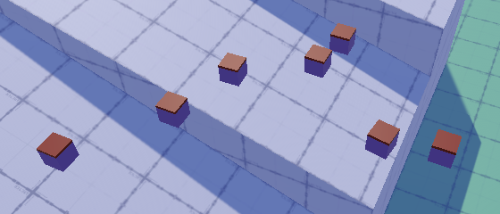

Swimming
Moving through and Floating in Water
- Detect water volumes.
- Apply water drag and buoyancy.
- Swim through water, including up and down.
- Make objects float.
This is the ninth installment of a tutorial series about controlling the movement of a character. It makes it possible to float in and move through water.
This tutorial is made with Unity 2019.4.1f. It also uses the ProBuilder package.

Water
Lots of games contain water and it's often swimmable. However, there is no out-of-the-box solution for interactive water. PhysX doesn't support it directly, so we have to create an approximation of water ourselves.
Water Scene
To demonstrate water I've created a scene that contains a swimming pool. It has various shore configurations, two surface levels, two water tunnels, a water bridge, and places where you can walk underneath the water. Our water will also work with arbitrary gravity, but this scene uses simple uniform gravity.

The water surface is made with single-sided flat meshes that have a semitransparent blue material. They're visible from above but not from below.

The water's volume has to be described with colliders set to be triggers. I've used box colliders without a mesh for most of the volume, scaled slightly larger than needed so there won't be any gaps in the water. A few places required more complex ProBuilder meshes to fit the volume. Those have to be set to triggers as well, which can be done via the Set Trigger option in the ProBuilder window. Note that mesh colliders that are triggers have to be convex. A concave mesh automatically generates a convex version that wraps it, but that can lead to places where it pokes out of the desired water volume. An example of this is the curving water bridge, for which I made a simplified convex collider.

Ignoring Trigger Colliders
All the water volume objects are on the Water layer, which should be excluded from all layer masks of both the moving sphere and the orbit camera. Even then, in general the two physics queries that we currently have are meant for regular colliders only, not triggers. Whether triggers are detected can be configured via the Physics / Queries Hit Triggers project setting. But we never want to detect triggers with the code what we have right now, so let's make that explicit, regardless of the project setting.
The first query is in MovingSphere.SnapToGround. Add QueryTriggerInteraction.Ignore as a final argument to the ray cast.
if (!Physics.Raycast(
body.position, -upAxis, out RaycastHit hit,
probeDistance, probeMask, QueryTriggerInteraction.Ignore
)) {
return false;
}
Second, do the same for the box cast in OrbitCamera.LateUpdate.
if (Physics.BoxCast(
castFrom, CameraHalfExtends, castDirection, out RaycastHit hit,
lookRotation, castDistance, obstructionMask,
QueryTriggerInteraction.Ignore
)) {
rectPosition = castFrom + castDirection * hit.distance;
lookPosition = rectPosition - rectOffset;
}
Detecting Water
We can now move though the water as if it doesn't exist. But to support swimming we must detect it. We'll do that by checking whether we're inside a trigger zone that's on the Water layer. Begin by adding a water mask to MovingSphere, along with a swimming material that we'll use to show that it's in the water.
[SerializeField] LayerMask probeMask = -1, stairsMask = -1, climbMask = -1, waterMask = 0; [SerializeField] Material normalMaterial = default, climbingMaterial = default, swimmingMaterial = default;
Then add an InWater property that indicates whether the sphere is in the water. We'll initially make this a simple get/set property that we reset to false in ClearState.
bool InWater { get; set; }
…
void ClearState () {
…
InWater = false;
}
Use the property to select the swimming material in Update, if we aren't climbing.
void Update () {
…
meshRenderer.material =
Climbing ? climbingMaterial :
InWater ? swimmingMaterial : normalMaterial;
}
Finally, detecting the water is done by adding OnTriggerEnter and OnTriggerStay methods. They work like OnCollisionEnter and OnCollisionStay except that they're for colliders and have a Collider parameter instead of a Collision. Both methods should check whether the collider is on the water layer and if so set IsSwimming to true.
void OnTriggerEnter (Collider other) {
if ((waterMask & (1 << other.gameObject.layer)) != 0) {
InWater = true;
}
}
void OnTriggerStay (Collider other) {
if ((waterMask & (1 << other.gameObject.layer)) != 0) {
InWater = true;
}
}
Submergence
Knowing whether our sphere intersects a water volume isn't enough to make it swim or float properly. We need to know how much of it is submerged, then we can use that to calculate drag and buoyancy.
Degree of Submergence
Let's add a submergence float field to keep track of the sphere's submergence state. A value of zero represents no water is touched while a value of 1 means it is completely underwater. Then change InWater so it simply returns whether the submergence is positive. Set it back to zero in ClearState.
bool InWater => submergence > 0f;
float submergence;
…
void ClearState () {
…
//InWater = false;
submergence = 0f;
}
Change the trigger methods so they invoke a new EvaluateSubmergence method, which simply sets submergence to 1 for now.
void OnTriggerEnter (Collider other) {
if ((waterMask & (1 << other.gameObject.layer)) != 0) {
EvaluateSubmergence();
}
}
void OnTriggerStay (Collider other) {
if ((waterMask & (1 << other.gameObject.layer)) != 0) {
EvaluateSubmergence();
}
}
void EvaluateSubmergence () {
submergence = 1f;
}
Submergence Range
We'll make the submergence range configurable. That way we can precisely control when our sphere counts as being in water and when it's fully submerged. We measure this from a point offset above the sphere's center, straight down to the maximum range. This would make it possible to count as fully submerged before the entire sphere is inside the zone, or to ignore low water elevations like puddles entirely, even though we're touching the water.

Make the offset and range configurable. Use 0.5 and 1 for the defaults, matching the shape of our radius 0.5 sphere. The range should be positive.
[SerializeField] float submergenceOffset = 0.5f; [SerializeField, Min(0.1f)] float submergenceRange = 1f;

We now have to perform a ray cast in EvaluateSubmergence, from the offset point straight down up to the submergence range, using the water mask. In this case we do want to hit the water, so use QueryTriggerInteraction.Collide. The submergence is then equal to 1 minus the hit distance divided by the range.
void EvaluateSubmergence () {
if (Physics.Raycast(
body.position + upAxis * submergenceOffset,
-upAxis, out RaycastHit hit, submergenceRange,
waterMask, QueryTriggerInteraction.Collide
)) {
submergence = 1f - hit.distance / submergenceRange;
}
}
To test the submergence value use it to temporarily color the sphere.
void Update () {
…
meshRenderer.material =
Climbing ? climbingMaterial :
InWater ? swimmingMaterial : normalMaterial;
meshRenderer.material.color = Color.white * submergence;
}
This works up to the moment that our sphere becomes completely submerged, because from then on we're casting from a point that's already inside the water collider, so the ray cast fails to hit it. But that means we're fully submerged, so we can just set submergence to 1 when we don't hit anything.
void EvaluateSubmergence () {
if (Physics.Raycast(
body.position + upAxis * submergenceOffset,
-upAxis, out RaycastHit hit, submergenceRange,
waterMask, QueryTriggerInteraction.Collide
)) {
submergence = 1f - hit.distance / submergenceRange;
}
else {
submergence = 1f;
}
}
However, that might cause an invalid submergence of 1 when moving out of the water, due the delay with which the collision and also the trigger methods get invoked, as the body position is different from when the trigger was detected by PhysX. We can guard against that by increasing the length of the ray by one unit. That's not perfect but takes care of nearly all cases except when moving extremely fast. This will cause the submergence to become negative when exiting the water, which is fine because that isn't counted as being in water.
void EvaluateSubmergence () {
if (Physics.Raycast(
body.position + upAxis * submergenceOffset,
-upAxis, out RaycastHit hit, submergenceRange + 1f,
waterMask, QueryTriggerInteraction.Collide
)) {
submergence = 1f - hit.distance / submergenceRange;
}
else {
submergence = 1f;
}
}
Now we can get rid of the submergence visualization.
//meshRenderer.material.color = Color.white * submergence;
Note that this approach assumes that there's water directly below the sphere's center. This might not be the case when the sphere touches a water volume's side or bottom, for example when touching an unrealistic wall made of water. In such cases we immediately go to full submersion.
Water Drag
Movement in water is more sluggish than on land, because the water causes much greater drag than air. So acceleration is noticeably slower while deceleration is faster. Let's add support for this and make it configurable by adding a water drag option, set to 1 by default. A range from zero to 10 is fine, as 10 will cause massive drag.
[SerializeField, Range(0f, 10f)] float waterDrag = 1f;

We'll use simple linear damping, similar to what PhysX does. We scale the velocity by 1 minus the drag multiplied with the time delta. Do this in FixedUpdate before invoking AdjustVelocity. We apply drag first so some acceleration is always possible.
void FixedUpdate () {
Vector3 gravity = CustomGravity.GetGravity(body.position, out upAxis);
UpdateState();
if (InWater) {
velocity *= 1f - waterDrag * Time.deltaTime;
}
AdjustVelocity();
…
}
Note that this means that if the water drag is equal to one divided by the fixed time step that velocity drops to zero in a single physics step. Velocity would reverse if it were greater instead. As we set the maximum to 10 this won't be an issue. To be safe, you could make sure that the velocity is scaled by at least zero.
If we're not completely submerged then we shouldn't experience maximum drag. So factor submergence into the damping.
velocity *= 1f - waterDrag * submergence * Time.deltaTime;
Buoyancy
Another important property of water is that things tend to float it in. So add a configurable buoyancy value to our sphere, with a minimum of zero and a default of 1. The idea is that something with zero buoyancy sinks like a rock, only being slowed down by water drag. An object with a buoyancy of 1 is in equilibrium, negating gravity entirely. And something with a buoyancy greater than 1 floats to the surface. A buoyancy of 2 would mean that it rises as fast as it would normally fall.
[SerializeField, Min(0f)] float buoyancy = 1f;

We implement this in FixedUpdate by checking whether we're not climbing but are in water. If so, apply gravity scaled by 1 minus buoyancy, again factoring in submergence. This overrides all other applications of gravity.
if (Climbing) {
velocity -=
contactNormal * (maxClimbAcceleration * 0.9f * Time.deltaTime);
}
else if (InWater) {
velocity +=
gravity * ((1f - buoyancy * submergence) * Time.deltaTime);
}
else if (OnGround && velocity.sqrMagnitude < 0.01f) { … }
Note that in reality the upward force increases with depth, while in our case it remains constant once maximum submergence is reached. This is sufficient to create believable buoyancy except when extremely deep water is in play.
The only case where buoyancy appears to fail is if the sphere ends up too close to the bottom. In this case ground snapping activates, counteracting buoyancy. We can avoid that by aborting SnapToGround if we're in water.
bool SnapToGround () {
if (stepsSinceLastGrounded > 1 || stepsSinceLastJump <= 2 || InWater) {
return false;
}
…
}
Swimming
Now that we're able to float in water the next step is to support swimming, which should include diving and surfacing.
Swim Threshold
We can only swim if we're deep enough in water, but we don't need to be fully submerged. So let's add a configurable swim threshold that defines the minimum submergence required for swimming. It has to be greater than zero, so use 0.01–1 for its range, with 0.5 as the default. That allows our sphere to swim if at least its bottom half is underwater. Also add a Swimming property that indicates whether the swim threshold is reached.
[SerializeField, Range(0.01f, 1f)] float swimThreshold = 0.5f; … bool Swimming => submergence >= swimThreshold;

Adjust Update so we use the swim material only when swimming.
void Update () {
…
meshRenderer.material =
Climbing ? climbingMaterial :
Swimming ? swimmingMaterial : normalMaterial;
}
Next, create a CheckSwimming method that returns whether we're swimming and if so sets the ground contact count to zero and makes the contact normal equal to the up axis.
bool CheckSwimming () {
if (Swimming) {
groundContactCount = 0;
contactNormal = upAxis;
return true;
}
return false;
}
Invoke that method in UpdateState when checking if we're grounded, directly after CheckClimbing. That way swimming overrules everything except climbing.
if (
CheckClimbing() || CheckSwimming() ||
OnGround || SnapToGround() || CheckSteepContacts()
) { … }
Then remove the check for being in water from SnapToGround. This makes snapping work again when we're in water but not when swimming.
//if (stepsSinceLastGrounded > 1 || stepsSinceLastJump <= 2 || InWater) {if (stepsSinceLastGrounded > 1 || stepsSinceLastJump <= 2) { return false; }
Swim Speed
Add a configurable max speed and acceleration for swimming, both set to 5 by default.
[SerializeField, Range(0f, 100f)] float maxSpeed = 10f, maxClimbSpeed = 4f, maxSwimSpeed = 5f; [SerializeField, Range(0f, 100f)] float maxAcceleration = 10f, maxAirAcceleration = 1f, maxClimbAcceleration = 40f, maxSwimAcceleration = 5f;

In AdjustVelocity, check whether we're in water after checking for climbing. If so, use the swim acceleration and speed, with the same axes as the general case.
if (Climbing) {
acceleration = maxClimbAcceleration;
speed = maxClimbSpeed;
xAxis = Vector3.Cross(contactNormal, upAxis);
zAxis = upAxis;
}
else if (InWater) {
acceleration = maxSwimAcceleration;
speed = maxSwimSpeed;
xAxis = rightAxis;
zAxis = forwardAxis;
}
else {
acceleration = OnGround ? maxAcceleration : maxAirAcceleration;
speed = OnGround && desiresClimbing ? maxClimbSpeed : maxSpeed;
xAxis = rightAxis;
zAxis = forwardAxis;
}
The deeper we are in the water the more we should depend on the swim acceleration and speed instead of the regular ones. So we'll interpolate between regular and swim values based on a swim factor, which is the submergence divided by the swim threshold, constrained to a maximum of 1.
else if (InWater) {
float swimFactor = Mathf.Min(1f, submergence / swimThreshold);
acceleration = Mathf.LerpUnclamped(
maxAcceleration, maxSwimAcceleration, swimFactor
);
speed = Mathf.LerpUnclamped(maxSpeed, maxSwimSpeed, swimFactor);
xAxis = rightAxis;
zAxis = forwardAxis;
}
Whether the other acceleration is the normal or air acceleration depends on whether we're on the ground.
acceleration = Mathf.LerpUnclamped( OnGround ? maxAcceleration : maxAirAcceleration, maxSwimAcceleration, swimFactor );
Diving and Surfacing
We can now move while swimming exactly like when on the ground or in the air, so controlled movement is constrained to the ground plane. Vertical movement is currently only due to gravity and buoyancy. To grant control over vertical motion we need a third input axis. Let's support this by adding an UpDown axis to our input settings, by duplicating either Horizontal or Vertical. I used space—the same key used for jumping—for the positive button and X for the negative button. Then change the playerInput field to a Vector3 and set its Z component to the UpDown axis in Update when swimming and to zero otherwise. We have to use the ClampMagnitude version of Vector3 from now on.
Vector3 playerInput;
…
void Update () {
playerInput.x = Input.GetAxis("Horizontal");
playerInput.y = Input.GetAxis("Vertical");
playerInput.z = Swimming ? Input.GetAxis("UpDown") : 0f;
playerInput = Vector3.ClampMagnitude(playerInput, 1f);
…
}
Find the current and new Y velocity components and use them to adjust the velocity at the end of AdjustVelocity. This works the same as for X and Z, but is done only when swimming.
void AdjustVelocity () {
…
velocity += xAxis * (newX - currentX) + zAxis * (newZ - currentZ);
if (Swimming) {
float currentY = Vector3.Dot(relativeVelocity, upAxis);
float newY = Mathf.MoveTowards(
currentY, playerInput.z * speed, maxSpeedChange
);
velocity += upAxis * (newY - currentY);
}
}
Climbing and Jumping
It should be hard to climb or jump while submerged. We can disallow both by ignoring the player's input in Update while swimming. The desire for climbing has to be explicitly deactivated. Jumping resets itself. It's still possible for climbing to be active while swimming if multiple physics steps take place before the next update, but that's fine as that takes place during a transition to swimming so exact timing doesn't matter. To climb out of water the player just has to swim up while pressing the climb button and climbing will activate at some point.
if (Swimming) {
desiresClimbing = false;
}
else {
desiredJump |= Input.GetButtonDown("Jump");
desiresClimbing = Input.GetButton("Climb");
}
While it's possible to jump when standing in shallow water, it makes it a lot harder. We'll simulate this by scaling down the jump speed by 1 minus the submergence divided by the swim threshold, to a minimum of zero.
float jumpSpeed = Mathf.Sqrt(2f * gravity.magnitude * jumpHeight);
if (InWater) {
jumpSpeed *= Mathf.Max(0f, 1f - submergence / swimThreshold);
}
Swimming in Moving Water
We won't consider water currents in this tutorial, but we should deal with water volumes that move in their entirety because they're animated, as that's just like regular moving geometry that we're stand or climbing on. To make that possible pass the collider to EvaluateSubmergence and use its attached rigid body for the connected body if we end up swimming. If we're in shallow water we ignore it.
void OnTriggerEnter (Collider other) {
if ((waterMask & (1 << other.gameObject.layer)) != 0) {
EvaluateSubmergence(other);
}
}
void OnTriggerStay (Collider other) {
if ((waterMask & (1 << other.gameObject.layer)) != 0) {
EvaluateSubmergence(other);
}
}
void EvaluateSubmergence (Collider collider) {
…
if (Swimming) {
connectedBody = collider.attachedRigidbody;
}
}
If we're connected to a water body then we shouldn't replace it with another body in EvaluateCollision. In fact, we don't need any connection information at all, so we can skip all the work in EvaluateCollision while swimming.
void EvaluateCollision (Collision collision) {
if (Swimming) {
return;
}
…
}
Floating Objects
Now that our sphere can swim it would be nice if it had some floating objects to interact with. Once again we have to program this ourselves, which we'll do by adding support for it to our existing component that already supports custom gravity.
Submergence
Add a configurable submergence offset, submergence range, buoyancy, water drag, and water mask to CustomGravityRigidbody, just like MovingSphere, except that we don't need a swim acceleration, speed, nor threshold.
[SerializeField] float submergenceOffset = 0.5f; [SerializeField, Min(0.1f)] float submergenceRange = 1f; [SerializeField, Min(0f)] float buoyancy = 1f; [SerializeField, Range(0f, 10f)] float waterDrag = 1f; [SerializeField] LayerMask waterMask = 0;

Next, we need a submergence field. Reset it to zero at the end of FixedUpdate if needed, before applying gravity. We also need to know the gravity when determining submergence, so keep track of it in a field as well.
float submergence;
Vector3 gravity;
…
void FixedUpdate () {
…
gravity = CustomGravity.GetGravity(body.position);
if (submergence > 0f) {
submergence = 0f;
}
body.AddForce(gravity, ForceMode.Acceleration);
}
Then add the required trigger methods along with an EvaluateSubmergence method, which works the same as before except that we calculate the up axis only when needed and don't support connected bodies.
void OnTriggerEnter (Collider other) {
if ((waterMask & (1 << other.gameObject.layer)) != 0) {
EvaluateSubmergence();
}
}
void OnTriggerStay (Collider other) {
if ((waterMask & (1 << other.gameObject.layer)) != 0) {
EvaluateSubmergence();
}
}
void EvaluateSubmergence () {
Vector3 upAxis = -gravity.normalized;
if (Physics.Raycast(
body.position + upAxis * submergenceOffset,
-upAxis, out RaycastHit hit, submergenceRange + 1f,
waterMask, QueryTriggerInteraction.Collide
)) {
submergence = 1f - hit.distance / submergenceRange;
}
else {
submergence = 1f;
}
}
Even when floating the objects can still go to sleep. If this is the case then we can skip evaluating submergence. So don't invoke EvaluateSubmergence in OnTriggerStay if the body is sleeping. We still do it in OnTriggerEnter because that guarantees a change.
void OnTriggerStay (Collider other) {
if (
!body.IsSleeping() &&
(waterMask & (1 << other.gameObject.layer)) != 0
) {
EvaluateSubmergence();
}
}
Floating
In FixedUpdate apply water drag and buoyancy if needed. In this case we apply buoyancy via a separate AddForce invocation instead of combining it with the normal gravity.
if (submergence > 0f) {
float drag =
Mathf.Max(0f, 1f - waterDrag * submergence * Time.deltaTime);
body.velocity *= drag;
body.AddForce(
gravity * -(buoyancy * submergence),
ForceMode.Acceleration
);
submergence = 0f;
}
We'll also apply the drag to the angular velocity, so objects won't keep spinning while floating.
body.velocity *= drag; body.angularVelocity *= drag;

Floating objects can now end up with arbitrary rotations while floating. Often objects will float with their lightest side facing up. We can simulate this by adding a configurable buoyancy offset vector, set to zero by default.
[SerializeField] Vector3 buoyancyOffset = Vector3.zero;
We then apply the buoyancy at this point instead of the object's origin, by invoking AddForceAtPosition instead of AddForce, with the offset transformed to word space as a new second argument.
body.AddForceAtPosition( gravity * -(buoyancy * submergence), transform.TransformPoint(buoyancyOffset), ForceMode.Acceleration );
Because gravity and buoyancy now act at different points they create angular momentum that pushes the offset point to the top. A larger offset creates a stronger effect, which can cause rapid oscillation, so the offset should be kept small.


Interacting with Floating Objects
While swimming through water with floating objects in them the orbit camera will jerk back and forth because it tries to stay in front of the objects. This can be avoided by adding a see-through layer that works like a regular layer, except that the orbit camera is set to ignore it.
This layer should only be used for objects that are small enough to ignore, or are interacted with a lot.
Stable Floating
Our current approach works fine for small objects, but it doesn't look as good for larger and nonuniform objects. For example, large floating blocks should remain more stable when the sphere interacts with them. To increase stability we have to spread the buoyancy effect over a larger area. This requires a more complex approach, so duplicate CustomGravityRigidbody and rename it to StableFloatingRigidbody. Replace its buoyancy offset with an array of offset vectors. Turn submergence into an array as well and create it in Awake with the same length as the offset array.
public class StableFloatingRigidbody : MonoBehaviour {
…
[SerializeField]
//Vector3 buoyancyOffset = Vector3.zero;
Vector3[] buoyancyOffsets = default;
…
float[] submergence;
Vector3 gravity;
void Awake () {
body = GetComponent<Rigidbody>();
body.useGravity = false;
submergence = new float[buoyancyOffsets.Length];
}
…
}
Adjust EvaluateSubmergence so it evaluates submergence for all buoyancy offsets separately.
void EvaluateSubmergence () {
Vector3 down = gravity.normalized;
Vector3 offset = down * -submergenceOffset;
for (int i = 0; i < buoyancyOffsets.Length; i++) {
Vector3 p = offset + transform.TransformPoint(buoyancyOffsets[i]);
if (Physics.Raycast(
p, down, out RaycastHit hit, submergenceRange + 1f,
waterMask, QueryTriggerInteraction.Collide
)) {
submergence[i] = 1f - hit.distance / submergenceRange;
}
else {
submergence[i] = 1f;
}
}
}
Then have FixedUpdate apply drag and buoyancy per offset as well. Both drag and buoyancy have to be divided by the amount of offsets so the maximum effect remains the same. The actual effect experienced by the object depends on the submergence total.
void FixedUpdate () {
…
gravity = CustomGravity.GetGravity(body.position);
float dragFactor = waterDrag * Time.deltaTime / buoyancyOffsets.Length;
float buoyancyFactor = -buoyancy / buoyancyOffsets.Length;
for (int i = 0; i < buoyancyOffsets.Length; i++) {
if (submergence[i] > 0f) {
float drag =
Mathf.Max(0f, 1f - dragFactor * submergence[i]);
body.velocity *= drag;
body.angularVelocity *= drag;
body.AddForceAtPosition(
gravity * (buoyancyFactor * submergence[i]),
transform.TransformPoint(buoyancyOffsets[i]),
ForceMode.Acceleration
);
submergence[i] = 0f;
}
}
body.AddForce(gravity, ForceMode.Acceleration);
}
Four points are usually enough for any box shape, unless they are very large or often end up partially out of the water. Note that offsets are scaled with the object. Also, increasing the object's mass makes it more stable.
Accidental Levitation
If a point ends up sufficiently high above the surface then its ray cast will fail, which makes it incorrectly count as fully submerged. This is a potential problem for large objects with multiple buoyancy points, because some could end up high above the water while another part of the object is still submerged. The result would be that the high point ends up levitating. You can achieve this by pushing a large light object partially out of the water.
The problem persists because part of the object still touches the water. To solve this we have to perform an extra query when the ray cast fails to check whether the point itself is inside a water volume. This can be done by invoking Physics.CheckSphere with the position and a small radius like 0.01 as arguments, followed by the mask and interaction mode. Only if that query returns true should we set submergence to 1. However, this could result in a lot of extra queries, so let's make it optional by adding configurable safe-floating toggle. It's only needed for large objects that could be pushes out of the water sufficiently.
[SerializeField]
bool safeFloating = false;
…
void EvaluateSubmergence () {
Vector3 down = gravity.normalized;
Vector3 offset = down * -submergenceOffset;
for (int i = 0; i < buoyancyOffsets.Length; i++) {
Vector3 p = offset + transform.TransformPoint(buoyancyOffsets[i]);
if (Physics.Raycast(
p, down, out RaycastHit hit, submergenceRange + 1f,
waterMask, QueryTriggerInteraction.Collide
)) {
submergence[i] = 1f - hit.distance / submergenceRange;
}
else if (
!safeFloating || Physics.CheckSphere(
p, 0.01f, waterMask, QueryTriggerInteraction.Collide
)
) {
submergence[i] = 1f;
}
}
}
The next tutorial is Reactive Environment.